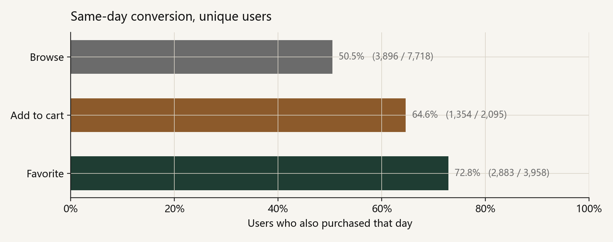
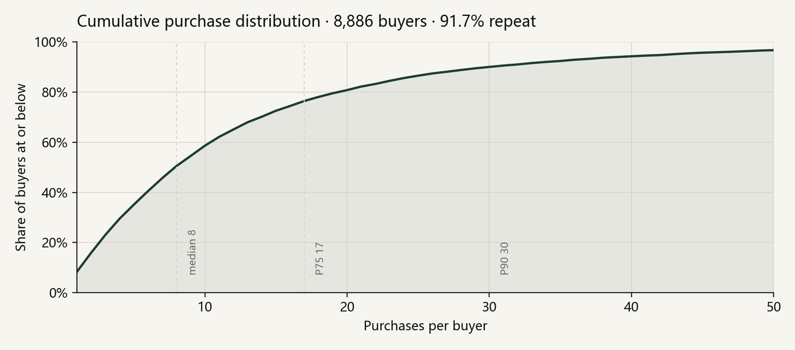

拓尔思 · 数据分析实习
Data Analysis Internship at TRS
我在百万级真实数据上做过完整的数据分析流程，也犯过评估上的错。
01 / Question真实业务数据里，用户和行为能告诉我们什么？
这段实习做了三个项目：淘宝用户行为分析、信用卡交易欺诈预测、台风强度预测。前两个是业务问题，第三个是预测建模练习。
但真正让我收获最大的，不是某个模型的准确率，而是后来发现：我把测试集做错了。
02 / Data1,225 万条行为记录，100 万条交易
- 淘宝用户行为：12,256,906 条记录，2014-11-18 至 2014-12-18；字段包括用户、商品、类目、行为类型与时间。行为类型为浏览、加购、收藏、购买。
- 信用卡欺诈：1,000,000 条交易，8.74% 为正样本；特征包括交易距离、价格比、是否芯片、是否密码、是否线上。
- 台风强度：气象观测数据，目标是预测台风强度。
03 / Method从描述到建模
淘宝用户行为
先做清洗与时间字段拆解，再分析一天内的小时级活跃度、转化路径与购买频次。用户分层用 RFM：以最近购买时间、购买频次、购买金额（数据中没有金额，用频次替代）划分四类用户。
信用卡欺诈
用 SMOTE 把正负样本扩到 50/50，再用 XGBoost 分类；对比逻辑回归作为基线。评估指标包括准确率、召回率、精确率与 F1。
台风强度
比较多种回归模型，最终 K 近邻表现最好；做特征标准化与交叉验证，R² 为 0.645。
04 / Result三个结果，一个必须说清楚的错误
| 项目 | 结果 | 口径 |
|---|---|---|
| 淘宝复购率 | 91.69% | 8,148 / 8,886 名购买用户，按 user_id 重算 |
| 欺诈模型 | 99.86% | SMOTE 后的平衡测试集，不代表真实分布 |
| 台风模型 | R² 0.645 | KNN，交叉验证 |
复购率的定义是“购买 ≥2 次的用户 / 全部购买用户”。原始小组报告里有一行注，担心没有按 user_id 分类；我按 user_id 重算了一遍，8,148 / 8,886 = 91.69%，与原始结论一致。
The mistake
欺诈模型我先做 SMOTE，把样本扩到 50/50，再切训练集和测试集。这意味着测试集里一半是合成样本，99.86% 的准确率不能代表真实分布。
正确做法是先切分，再只对训练集做重采样；测试集保持原始分布，改报 PR-AUC、Recall@Precision 与误报成本。这个错误是我后来做 01 号项目时最常想起的一件事。



05 / Limitation三个评估问题
- 重采样顺序错了。SMOTE 在切分之前做，测试集被合成样本污染。
- 指标选错了。在欺诈场景里，准确率不是最重要的；漏报与误报的成本不对称。
- 单日样本。行为分析只看了 2014-12-12 一天，不能代表常态；复购率用的是全月数据，两者口径不同。
06 / Next如果再做一次
- 先切分，再 SMOTE；测试集保持原始 8.74% 的正样本比例。
- 改报 PR-AUC、Recall@Precision、混淆矩阵与误报成本。
- 用时间序列切分，避免同一用户的未来信息泄漏到训练集。
- 如果数据允许，把 RFM 的 M（金额）补上，而不是只用频次。